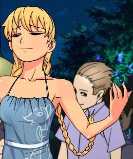

7 дней лета, билд 0.21с (отход от канона)
Страница 1 из 7 • 1, 2, 3, 4, 5, 6, 7 
Стоит ли альтернативный первый день усилий по интеграции?
7 дней лета, билд 0.21с (отход от канона)
автор 7dl-kun в Пт 7 Авг 2015 - 17:43
Сделано безобразно мало так как я лентяй, лодырь и параллельно пишу Нуар и Славю-классик.
Нет, я не дам вам их почитать в этом билде, можете ругаться прямо сейчас.
Версия 0.21с включает в себя:
1. Обновлённую версию пролога, в частности, пролог Герка.
2. Альтернативную версию первого дня - попадёт туда читатель или нет, в случайном порядке во время выбора "ты пойдёшь со мной", так что автосохранение в помощь.
3. Чуточку приукрашенные эпилоги Лены.
4. Кучу наворованной откуда только можно музыки, артов, etc
5. Ваш фидбек в виде исправленных и отловленных ошибок (=
6. Начало интеграции альтернативного дня повсеместно по коду.
7. Небольшой презент для ленофагов.
Если вам всё ещё интересно, брать здесь (обновлено до 21с): https://yadi.sk/d/T1NvNvawiTMBa
Остальные ждут первый день нуар (022) и Слави-классик (023).
Последний раз редактировалось: 7dl-kun (Пт 14 Авг 2015 - 22:35), всего редактировалось 6 раз(а)

7dl-kun- Находка для шпиона

- Сообщения : 3026
Дата регистрации : 2014-09-07
Откуда : здесь столько наркоманов?
Re: 7 дней лета, билд 0.21с (отход от канона)
автор Moonshine в Пт 7 Авг 2015 - 17:49
Замещательно. Заинтриговали. Ух, доберусь сегодня вечером до этого дела.7dl-kun пишет:
Альтернативную версию первого дня - попадёт туда читатель или нет, определяется во время "ты пойдёшь со мной" в случайном порядке во время выбора "ты пойдёшь со мной", так что автосохранение в помощью.

Moonshine- Маргинал

- Сообщения : 341
Дата регистрации : 2015-05-05
Re: 7 дней лета, билд 0.21с (отход от канона)
автор LRS в Пт 7 Авг 2015 - 18:34
I'm sorry, but an uncaught exception occurred.
While running game code:
File "game/scenario_alt/alt_day11.rpy", line 109, in script
File "game/scenario_alt/alt_day11.rpy", line 109, in python
NameError: name 'dsr' is not defined
-- Full Traceback ------------------------------------------------------------
Full traceback:
File "D:\Alcohol 120%\VN\Бесконечное лето\everlasting_summer-1.1\renpy\bootstrap.py", line 265, in bootstrap
renpy.main.main()
File "D:\Alcohol 120%\VN\Бесконечное лето\everlasting_summer-1.1\renpy\main.py", line 327, in main
run(restart)
File "D:\Alcohol 120%\VN\Бесконечное лето\everlasting_summer-1.1\renpy\main.py", line 78, in run
renpy.execution.run_context(True)
File "D:\Alcohol 120%\VN\Бесконечное лето\everlasting_summer-1.1\renpy\execution.py", line 509, in run_context
context.run()
File "D:\Alcohol 120%\VN\Бесконечное лето\everlasting_summer-1.1\renpy\execution.py", line 288, in run
node.execute()
File "D:\Alcohol 120%\VN\Бесконечное лето\everlasting_summer-1.1\renpy\ast.py", line 1108, in execute
paired = renpy.python.py_eval(self.paired)
File "D:\Alcohol 120%\VN\Бесконечное лето\everlasting_summer-1.1\renpy\python.py", line 1338, in py_eval
return eval(py_compile(source, 'eval'), globals, locals)
File "game/scenario_alt/alt_day11.rpy", line 109, in <module>
show mi shocked pioneer with dsr
NameError: name 'dsr' is not defined
Windows-post2008Server-6.2.9200
Ren'Py 6.16.3.502
Everlasting Summer 1.0
LRS- Ньюфаг

- Сообщения : 12
Дата регистрации : 2015-05-03
Возраст : 29
Re: 7 дней лета, билд 0.21с (отход от канона)
автор 7dl-kun в Пт 7 Авг 2015 - 18:54
Перевыгрузил.
7dl-kun- Находка для шпиона
- Сообщения : 3026
Дата регистрации : 2014-09-07
Откуда : здесь столько наркоманов?
Re: 7 дней лета, билд 0.21с (отход от канона)
автор peregarrett в Пт 7 Авг 2015 - 19:46
- Крик души:
- Переписанный первый день.
Случайный выбор.
ПИСЬМО.
ЗА ЧТОООО?!?!?!

peregarrett- Находка для шпиона
- Сообщения : 3264
Дата регистрации : 2014-09-07
Возраст : 36
Re: 7 дней лета, билд 0.21с (отход от канона)
автор Draug в Пт 7 Авг 2015 - 20:59

Draug- Мизантроп

- Сообщения : 964
Дата регистрации : 2015-06-27
Возраст : 28
Откуда : Цитадель
Re: 7 дней лета, билд 0.21с (отход от канона)
автор HOXAJI в Пт 7 Авг 2015 - 21:22
И да. из других рутов вылеты на сыч-рут уже работают?

HOXAJI- Ньюфаг
- Сообщения : 13
Дата регистрации : 2015-08-02
Re: 7 дней лета, билд 0.21с (отход от канона)
автор haLf0nzio в Пт 7 Авг 2015 - 22:24
а ешо Леночка в машинке просто уняня

haLf0nzio- Хикка

- Сообщения : 161
Дата регистрации : 2015-04-28
Возраст : 27
Откуда : Санкт-Петербург
Re: 7 дней лета, билд 0.21с (отход от канона)
автор Arlien в Пт 7 Авг 2015 - 22:59
- ..и вытянул Арли мешочек очепяток:
11 – мб упростить? Просто «Она похожа на мою жизнь»?
175 потеряшка, цс должно быть кажись. Или экстенд.
322 – «оттого» слитно в данном случае
432 – «В свободной»
441 – «отделеннОМ»
444 – повторяется «мне»
647 – сложитьСя
747 – повторяется «я»
873 – «Повернуть время вспять»
1308 – «спурт» - это что-то спортивное или речь о спринте?
1365 – «нИ одного»
1480 – «оЦенил»?..
1518 – «в людЕй»
Алсо, 1502 – 1548 – мяч пущен на уровне головы, так? Значит, чтобы отбить его ногой, нужно эту ногу задрать на уровень головы, пральна?.. я мог бы понять, если бы такой фляк исполнила Мику, но Семен?.. да еще и с точностью, отличной от «в заданную полусферу»?... может, все же кулаком?
1586-1587 – «помещению-помещению»
1684 – «в-третьих»
1873 – правильней просто «Рубашка и ля-ля-ля – это тоже форма»
1991 – либо подрезали, либо утащили
2169 – немцы и итальянцы с маленькой буквы
2410 – первая запятая лишняя
Стесняюсь спросить - а альтернативный первый день 7ДЛ-куном ли писан?
И в каком виде планируется к применению в сценарии? В нынешнем, заменяя изначальный, как бонус-контент?
В общем и целом впечатления от него скорее негативные.
Arlien- Людовед

- Сообщения : 1322
Дата регистрации : 2014-09-08
Re: 7 дней лета, билд 0.21с (отход от канона)
автор argh в Пт 7 Авг 2015 - 23:46
- Спойлер:
строка 586 - наверно "здравомыслие"
строка 759 - "должна"
строка 819 - "девушка"
в столовой спрайт Слави вылез посреди разговора.
Вроде как и под котлетой ничего не оказалось у Семёна, а вечером вспоминает про сюрприз от Ульяны.
При вечернем разговоре с Леной. ЦГ-шка с ней и спрайт.
Разговор с ОД перед сном - форму уже Славя выдала.
P.S. А как Лена Семёну ещё один телефон отдала???
P.P.S. Какой-то внутренний диссонанс теперь возникает при чтении общения ОД и Семёна со 2 дня. Наверно, очень хорошая психологическая подготовка у вожатой. Возится с ним неизвестно сколько, а он, скотина неблагодарная, её и не помнит.
argh- Маргинал
- Сообщения : 374
Дата регистрации : 2015-06-12
Re: 7 дней лета, билд 0.21с (отход от канона)
автор Ленофаг Простой в Сб 8 Авг 2015 - 1:05
- рандомная вычитка:
- день 0
1160 - по идее должен показываться фон int_store
1166 - Газовый баллонч[и]к(и) подал давление на свинцовый шарик
альт 1 день
175 - [cs] "Вот о чём."
745 - "Я описал ситуацию в которую угодил по вине Алисы, с тазом, шваброй и ожиданием(и)."
747 - me "Так что (я) теперь я здесь, такой вот молодой и красивый."
778 - "К счастью, конечная точка нашего пути оказалась не слишом далека[.]"
808 - В отлич[и]е от Алисы,
819 - д[е]вушка
839 - Семён по идее в пионерской форме должен быть, в оригинальном БЛ была такая ЦГ, называется d2_mirror
982 - тут надо бы спрайт сменить...
986 - "Девушка немного смутилась, поняв невысказанный вопрос.(.)"
993-ю строку надо поставить чуть ниже, перед 997-й - во фразе про манеры Семён ещё не знает имени Слави
1327 - "Ещё несколько минут, заполненных одни[м] только дыханием и желанием сплюнуть."
1371 - "Люб[о]пытно, что вслед за воришкой первой рванула как раз Лена."
1518 - в люд[е]й
1841 - "Она улыбнулась мне, а вот быковатый мужик рядом с ней нахмурился, одаряя меня оценивающим взглядом.(.)"
1849 - "Так скажишь(пробел),[пробел]как тебя зовут?"
1921 - "И не надо быть Э[й]нштейном, чтобы понять, чьих рук это дело."
1932 - "Догадываешь[с]я, что надо сделать?"
1951 - extend "(… )дрянь!"
2166 - "Что-то мешало мне бежать, и я с недоумением посмотрел на палку, которую до сих пор сжимал в руке..(.)"
В случае альт ветки возвращение конфет в столовую как-то само собой превращается в кормление ГГ, надо сгладить этот момент
2292 - в альт ветке не было этого события
день 1
2343 - спрайт появляется посреди ЦГ
2524 - спрайт появляется посреди ЦГ
2522 - if [not]alt_day1_alt_chase: - если бежал, то смарт вернул
2587 - if [not]alt_day1_alt_chase:
2853 - Вот щас обидно было
2916 - extend "(пробел), а отключился раньше, чем голова коснулась подушки."

Ленофаг Простой- Сыч

- Сообщения : 86
Дата регистрации : 2015-03-09
Возраст : 21
Re: 7 дней лета, билд 0.21с (отход от канона)
автор XOLODOS в Сб 8 Авг 2015 - 1:14

XOLODOS- Сыч
- Сообщения : 66
Дата регистрации : 2015-07-31
Возраст : 24
Откуда : Россия, Смоленская обл. г.Починок
Re: 7 дней лета, билд 0.21с (отход от канона)
автор Ленофаг Простой в Сб 8 Авг 2015 - 1:20
Треклист же был на вики. Разве что, его надо бы обновить после билда...XOLODOS пишет:ИМХО. Зря автор говорит что он лентяй. Мод получается замечательный. Кстати можно ссылочку на полный список саундтреков использованных в моде?
Ленофаг Простой- Сыч
- Сообщения : 86
Дата регистрации : 2015-03-09
Возраст : 21
Re: 7 дней лета, билд 0.21с (отход от канона)
автор XOLODOS в Сб 8 Авг 2015 - 1:21
XOLODOS- Сыч
- Сообщения : 66
Дата регистрации : 2015-07-31
Возраст : 24
Откуда : Россия, Смоленская обл. г.Починок
Re: 7 дней лета, билд 0.21с (отход от канона)
автор argh в Сб 8 Авг 2015 - 1:34
- Спойлер:
I'm sorry, but an uncaught exception occurred.
While running game code:
File "game/scenario_alt/alt_day2.rpy", line 6396, in script
File "game/scenario_alt/alt_day2.rpy", line 6396, in python
File "game/scenario_alt/res/alt_res_map.rpy", line 440, in python
File "game/scenario_alt/res/alt_res_map.rpy", line 347, in python
KeyError: 'error'
-- Full Traceback ------------------------------------------------------------
Full traceback:
File "C:\everlasting_summer-1.1-all\renpy\execution.py", line 288, in run
node.execute()
File "C:\everlasting_summer-1.1-all\renpy\ast.py", line 720, in execute
renpy.python.py_exec_bytecode(self.code.bytecode, self.hide, store=self.store)
File "C:\everlasting_summer-1.1-all\renpy\python.py", line 1304, in py_exec_bytecode
exec bytecode in globals, locals
File "game/scenario_alt/alt_day2.rpy", line 6396, in <module>
$ disable_current_zone_alt2()
File "game/scenario_alt/res/alt_res_map.rpy", line 440, in disable_current_zone_alt2
store.map_alt2.disable_current_zone()
File "game/scenario_alt/res/alt_res_map.rpy", line 347, in disable_current_zone
global_zones_alt2[global_map_result_alt2]["avaliable"] = False
KeyError: 'error'
argh- Маргинал
- Сообщения : 374
Дата регистрации : 2015-06-12
Re: 7 дней лета, билд 0.21с (отход от канона)
автор haLf0nzio в Сб 8 Авг 2015 - 1:39
argh пишет:2 день. После турнира побегал от Алисы, искупался
- !:
- неправильно вы мод все читаете. надо через .rpy notepad'ом++ приобщаться и никаких exception occurred-ов не будет.
haLf0nzio- Хикка
- Сообщения : 161
Дата регистрации : 2015-04-28
Возраст : 27
Откуда : Санкт-Петербург
Re: 7 дней лета, билд 0.21с (отход от канона)
автор XOLODOS в Сб 8 Авг 2015 - 1:41
- Спойлер:
- 'm sorry, but an uncaught exception occurred.
While executing init code:
File "game/mods/scenario_alt/res/alt_res_map.rpy", line 178, in script
init 5 python:
File "game/mods/scenario_alt/res/alt_res_map.rpy", line 180, in <module>
if not config_session:
NameError: name 'config_session' is not defined
-- Full Traceback ------------------------------------------------------------
Full traceback:
File "game/mods/scenario_alt/res/alt_res_map.rpy", line 178, in script
init 5 python:
File "D:\ESS\everlasting_summer-1.2-all\renpy\ast.py", line 785, in execute
renpy.python.py_exec_bytecode(self.code.bytecode, self.hide, store=self.store)
File "D:\ESS\everlasting_summer-1.2-all\renpy\python.py", line 1382, in py_exec_bytecode
exec bytecode in globals, locals
File "game/mods/scenario_alt/res/alt_res_map.rpy", line 180, in <module>
if not config_session:
NameError: name 'config_session' is not defined
Windows-7-6.1.7601-SP1
Ren'Py 6.18.3.761
Everlasting Summer 1.2
XOLODOS- Сыч
- Сообщения : 66
Дата регистрации : 2015-07-31
Возраст : 24
Откуда : Россия, Смоленская обл. г.Починок
Re: 7 дней лета, билд 0.21с (отход от канона)
автор argh в Сб 8 Авг 2015 - 1:58
argh- Маргинал
- Сообщения : 374
Дата регистрации : 2015-06-12
Re: 7 дней лета, билд 0.21с (отход от канона)
автор nuttyprof в Сб 8 Авг 2015 - 2:00
XOLODOS пишет:Вот только попытался запустить. Все установлено верно
..................................
Windows-7-6.1.7601-SP1
Ren'Py 6.18.3.761
Everlasting Summer 1.2
На версии 1.2. не запустится, там немного код отличается.

nuttyprof- Хикка
- Сообщения : 102
Дата регистрации : 2015-05-25
Возраст : 45
Откуда : Юг
Re: 7 дней лета, билд 0.21с (отход от канона)
автор haLf0nzio в Сб 8 Авг 2015 - 2:55
argh пишет:зря что-ли люди рисовали?
- ->:
- у всех ведь папкэ с модом есть, можно открыть параллельно и причащаться втам опосля встреченных указаний в коде, а вообще пользуйтесь воображением =)
haLf0nzio- Хикка
- Сообщения : 161
Дата регистрации : 2015-04-28
Возраст : 27
Откуда : Санкт-Петербург
Re: 7 дней лета, билд 0.21с (отход от канона)
автор argh в Сб 8 Авг 2015 - 2:57
Всё язвите и язвите.
argh- Маргинал
- Сообщения : 374
Дата регистрации : 2015-06-12
Re: 7 дней лета, билд 0.21с (отход от канона)
автор nuttyprof в Сб 8 Авг 2015 - 3:01
argh пишет:2 день. После турнира побегал от Алисы, искупался
======================
I'm sorry, but an uncaught exception occurred.
While running game code:
File "game/scenario_alt/alt_day2.rpy", line 6396, in script
File "game/scenario_alt/alt_day2.rpy", line 6396, in python
File "game/scenario_alt/res/alt_res_map.rpy", line 440, in python
File "game/scenario_alt/res/alt_res_map.rpy", line 347, in python
KeyError: 'error'
- Лишняя строчка в alt_day2.rpy:
В строке 6396 выражение $ disable_current_zone_alt2() не нужно совсем, его убрать (оно-то и дает ошибку).
Если прийти на пляж по условию alt_day2_dv_chased - мы обходим инициализацию зон карты, отключать пляж в этом месте тоже не нужно, потому что по этому же условию в инициализации он и не включается (строки 6185..6188).
И еще одна ошибка вероятна :
- в строке 6400 $ disable_current_zone_alt2() тоже убрать, перенести его после строки 6404 ($ alt_day2_date = 3), перед выходом.
Иначе возможен двойной вызов отключения зоны.
nuttyprof- Хикка
- Сообщения : 102
Дата регистрации : 2015-05-25
Возраст : 45
Откуда : Юг
Re: 7 дней лета, билд 0.21с (отход от канона)
автор haLf0nzio в Сб 8 Авг 2015 - 3:47
- Спойлер:

haLf0nzio- Хикка
- Сообщения : 161
Дата регистрации : 2015-04-28
Возраст : 27
Откуда : Санкт-Петербург
Re: 7 дней лета, билд 0.21с (отход от канона)
автор Ленофаг Простой в Сб 8 Авг 2015 - 5:50
- вычитка и не только:
- день 2
692 - этого не было в альт первом дне
7692 - extend "[пробел]Я у тебя здесь краску вижу, в библиотеке стоит мольберт…
день 3
922 строку (выдача лп) надо спрятать в ветку if alt_day2_date == 132, иначе при условии что сел с Леной и был во втором дне на свидании (990-я строка) выдаётся аж 2 ЛП сразу
сыч - рут
60 - т(е)[о]й же
1407 - sl "Да..[.]"
2710 - show u(s)[n] shocked sport with dspr
3457 - "И венчал всю эту кучку небольшо[й] пакетик с конфетами.
В меню выбора отыгрыша во варианте Герка изменена фраза снизу (Существует не так много вещей, по настоящему заслуживающих веры), во варианте Локи и Дрища сохраняется старая фраза (Проблема в том, что нормальных людей не осталось...), надо переделать картинки из которых состоит меню
Здесь кончается вычитка и начинается простыня негодования Ленофага относительно сыч-рута. В сыч-руте при условии что просыпаешься в медпункте после падения со здания кружков есть примерно такой вариант завершения отношений с Леной (53-я строка):
if alt_day3_un_event:
"Меня нельзя обвинить в недостатке старания."
"Я спасал принцессу, дрался с драконом… Но эпилог оказался малость ожидаемым."
"Наверное, у меня на лбу написано «Friendship Only. {w}Глупости не предлагать.»"
"А может, дело в том, я ей с самого начала не понравился."
"Такое, к сожалению, происходит куда чаще, чем мне того хотелось бы - что поделать, не Аполлон я, да и на Париса не тяну, и во все времена утешал себя тем, что, дескать, с лица воды не пить, и мужчине достаточно быть лишь чуть красивее питекантропа."
"Но по сравнению с тей же кудрявой смазливой мордашкой Электроника сразу становится понятно, почему от меня воротят нос местные красавицы."
if alt_day3_un_invite == 1:
"Хотя, казалось, после вчерашних откровений дорога прямиком если и не в ЗАГС, то куда-то примерно в ту сторону."
"Не ожидал от неё такой откровенности. Наверное, потому и затупил так жестоко."
"Казалось бы, что может быть проще - просит тебя о помощи нравящаяся тебе девочка - так помоги же ты ей, господи!"
"Протяни руку, улыбнись - и она пусть не из симпатии, пусть из простого человеческого участия ответит на твою улыбку…"
"И в мире станет самую чуточку светлее."
"Не мой случай."
и далее на 100-я строке - идёт ветка при условии if alt_day3_un_invite == 1
То бишь, если был ивент с похищением Лены из библиотеки и походом в карьер, то выполнится условие alt_day3_un_event, если при этом Семён после этого ивента подсел к Лене за обедом, то произойдёт разговор возле складов и попытка Виолы припахать к общественно - полезной деятельности в медпункте. Соль, однако, в том, что даже если отказаться, то с высокой вероятностью (говорю так, потому что тестировал только на Герке, при нём эта вероятность стопроцентная) ЛП будет достаточно, чтобы пролететь мимо Сыч-рута в сторону классического (недописанного) рута. Почему? Потому что в отношениях с Леной есть вот такая цепь, для которой важно выполнение каждого условия, при которых прибавляются ЛП.
Вот как-то так:
Выйти на сцену у складов с припахиванием в медпункт (читай - выполнить условие if alt_day3_un_invite == 1) - для этого нужно обязательно сесть с Леной за обедом 3-го дня и до этого принять участие в похищении её из библиотеки (дабы выполнилось if alt_day3_un_event). Для ивента с похищением из библиотеки нужно получить согласие за завтраком 3-го дня. Чтобы была возможность согласиться на этот ивент, необходимы послетурнирные свидания с Леной во втором дне (при их отсутствии диалог за завтраком пойдёт по другой ветке). И наконец, для послетурнирных свиданий необходимо 7 ЛП минимум.
Таким макаром, выйти на этот кусок кода и как-то замять отношения с Леной очень сложно, почти нереально: игра скажет, что ни с кем игрок толком не сблизился. Хотя и возможно выполнить условие alt_day3_un_event, а за обедом не садится к Лене, пропуская сцену у складов и скатываясь в сычевание, но тут важна ювелирная точность.
Здесь ровно два выхода:
Первый - сделать минус к ЛП при отказе помогать в медпункте. Но тогда осложнится выход на недописанный классик-рут, куда надо 12 ЛП. Выходить туда придётся с ювелирной точностью, не делая неверных выборов. А может, это будет вообще нереально, если не воспользоваться фичей (которая не баг).
Второй, наиболее простой и предпочтительный - сделать проверки не по ключевым квестам, а по ЛП. Это важно ещё и потому, что даже не учитывая цепочки взаимозависящих друг от друга квестов Лены можно достаточно развить с ней отношения, и словить когнитивный диссонанс когда при 7-11 ЛП Лены сыч-рут скажет тебе, что ты ни с кем толком не сблизился. А вот набрать те самые 7-11 ЛП реально, разорвав ту же самую цепь и не пойдя с ней на послетурнирное свидание и не попадая больше на 7-дл рут (что со мной и происходит, кстати говоря). Можно даже вылететь на недописанную классику, если постараться. Ну или не стараться, а опять-таки использовать фичу с картами.
Ленофаг Простой- Сыч
- Сообщения : 86
Дата регистрации : 2015-03-09
Возраст : 21
Re: 7 дней лета, билд 0.21с (отход от канона)
автор LRS в Сб 8 Авг 2015 - 13:07
- Код:
5633 - show mi happy swim with dspr
...
5636 - show mi normal pioneer with dspr
...
5648 - show mi normal swim at center with dspr
LRS- Ньюфаг
- Сообщения : 12
Дата регистрации : 2015-05-03
Возраст : 29
Страница 1 из 7 • 1, 2, 3, 4, 5, 6, 7